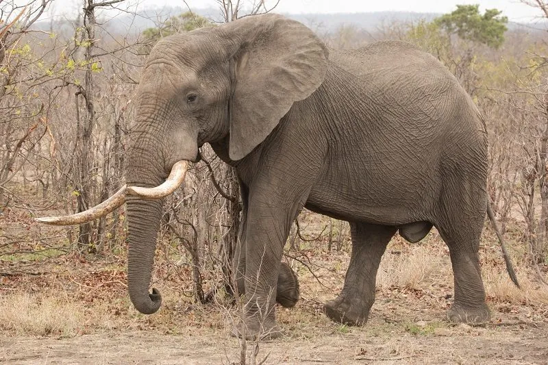

哺乳动物 · 动物界
非洲草原象 Loxodonta africana

现存体型最大的陆生动物，以扇状大耳和鼻端两根指状突为标志，母系群由最年长的雌象带领觅水迁徙。
- 分类
- 门脊索动物门纲哺乳纲目长鼻目科象科属非洲象属
- 栖息环境
- 稀树草原、灌木丛与河流湿地，需要大量饮水与植被
- 地理分布
- 撒哈拉以南非洲的 37 个国家，从草原到疏林地带均有分布
- 保护级别
- IUCN 濒危（EN）
物种志
非洲草原象肩高 3–3.7 米，体重 4000–7000 kg，是现存最大的陆生动物。它的耳朵巨大，形如非洲地图，单只面积可达 2 平方米，扇动时可帮助散热；象鼻末端有两个指状突起，能捏起硬币大小的物体。多数个体都长有象牙，雌雄皆具。
非洲草原象栖息于稀树草原、灌丛和湿地边缘，每天要喝 100–200 L 水、吃掉约 150 kg 植物，包括草、树皮、树叶和果实。象群以母系社会为核心，由最年长的雌象带领 8–20 头亲缘个体，依靠记忆寻找水源和迁徙路线；成年雄象结成松散的单身群或独行。雌象妊娠期约 22 个月，是哺乳动物中最长的，每胎 1 仔，幼象出生时约 100 kg。偷猎象牙和栖息地缩减使种群在 20 世纪大幅下降，目前被列为濒危。
形态与习性
- 食性草、树皮、树叶与果实，每天约 150 kg、饮水 100–200 L
- 肩高3–3.7 m
- 体重4000–7000 kg
- 寿命野外 60–70 年
- 繁殖妊娠期约 22 个月，每胎 1 仔，幼象约 100 kg
- 社会结构母系群，由最年长雌象带领
- 活动节律晨昏与夜间活跃，中午常休息
趣味知识
- 非洲草原象的耳朵形似非洲地图，扇动时可帮助散热。
- 象鼻末端有两个指状突起，能捏起硬币大小的小物件。
- 雌象妊娠期约 22 个月，是哺乳动物中最长的怀孕期之一。
- 最年长的雌象凭记忆带队寻找水源，是象群的“活地图”。